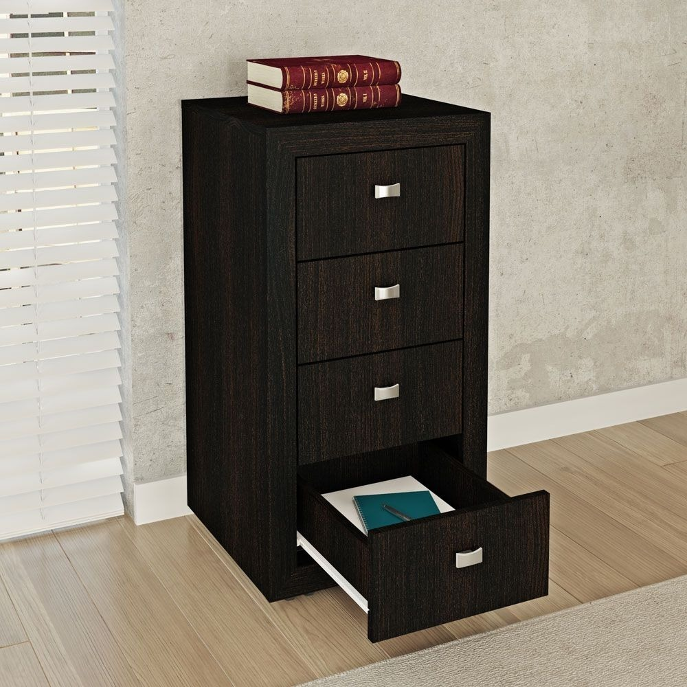
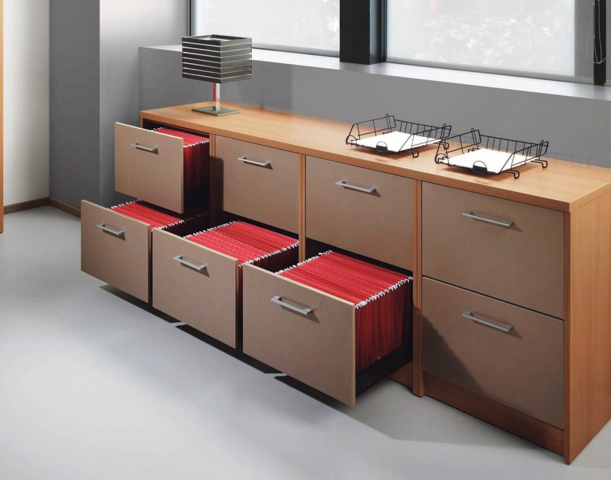

ESCRITORIO EN L
Medidas: Superficie principal 150 cm x 75 cm, Superficie secundaria 120 cm x 60 cm, Altura 75 cm. Diseño en forma de L para aprovechar el espacio al máximo. Ideal para oficinas o estudios, proporciona amplio espacio de trabajo. Incluye espacio adicional para ordenador, monitor, teclado, impresora, etc. Estilo moderno y funcional. Material resistente y duradero. Perfecto para esquinas o rincones de habitaciones.
ESCRITORIO INDIVIDUAL

Medidas: 120 cm x 60 cm x 75 cm (ancho x profundidad x altura). Diseño simple y funcional. Amplia superficie de trabajo. Ideal para oficinas en casa o estudios. Espacio para ordenador y accesorios. Material duradero. Estilo versátil. Fácil de montar. Promueve la organización y eficiencia.
BIBLIOTECA
Amplio espacio de almacenamiento para libros, decoraciones u otros objetos. Diseño funcional y versátil. Medidas: Varían según el modelo, consultar disponibilidad. Estantes ajustables para adaptarse a diferentes tamaños de libros. Material resistente y duradero. Estilo atemporal que se integra fácilmente en diferentes decoraciones. Fácil de montar y mantener. Ideal para salas de estar, oficinas o habitaciones. Proporciona un ambiente organizado y ordenado para tus libros y objetos de valor. Promueve la exhibición y accesibilidad de tus libros favoritos.
REPSIA FLOTANTE
Diseño compacto y versátil para ahorrar espacio. Medidas: Varían según el modelo, consultar disponibilidad. Ideal para exhibir libros, decoraciones, fotografías u otros objetos. Construida con materiales de calidad para mayor durabilidad. Estilo moderno que se adapta a diversos estilos de decoración. Fácil de montar y mantener. Opciones de estantes ajustables para adaptarse a diferentes alturas de objetos. Perfecta para salas de estar, dormitorios, oficinas o espacios reducidos. Proporciona una forma elegante de organizar y mostrar tus artículos favoritos. Añade un toque decorativo y funcional a cualquier ambiente.
CAJONERO
Compacto y funcional. Medidas: Varían según el modelo. Diseño con múltiples cajones. Material resistente. Fácil de montar. Proporciona almacenamiento organizado. Ideal para dormitorios, oficinas o espacios reducidos. Añade practicidad y estilo.
FICHERO
Diseño compacto. Medidas: Varían según el modelo. Espacio para documentos. Material resistente. Fácil de montar. Ideal para oficinas. Almacenamiento práctico.
ESCRITORIO EN L
Medidas: Superficie principal 150 cm x 75 cm, Superficie secundaria 120 cm x 60 cm, Altura 75 cm. Diseño en forma de L para aprovechar el espacio al máximo. Ideal para oficinas o estudios, proporciona amplio espacio de trabajo. Incluye espacio adicional para ordenador, monitor, teclado, impresora, etc. Estilo moderno y funcional. Material resistente y duradero. Perfecto para esquinas o rincones de habitaciones.
ESCRITORIO INDIVIDUAL
Medidas: 120 cm x 60 cm x 75 cm (ancho x profundidad x altura). Diseño simple y funcional. Amplia superficie de trabajo. Ideal para oficinas en casa o estudios. Espacio para ordenador y accesorios. Material duradero. Estilo versátil. Fácil de montar. Promueve la organización y eficiencia.
BIBLIOTECA
Amplio espacio de almacenamiento para libros, decoraciones u otros objetos. Diseño funcional y versátil. Medidas: Varían según el modelo, consultar disponibilidad. Estantes ajustables para adaptarse a diferentes tamaños de libros. Material resistente y duradero. Estilo atemporal que se integra fácilmente en diferentes decoraciones. Fácil de montar y mantener. Ideal para salas de estar, oficinas o habitaciones. Proporciona un ambiente organizado y ordenado para tus libros y objetos de valor. Promueve la exhibición y accesibilidad de tus libros favoritos.
REPSIA FLOTANTE
Diseño compacto y versátil para ahorrar espacio. Medidas: Varían según el modelo, consultar disponibilidad. Ideal para exhibir libros, decoraciones, fotografías u otros objetos. Construida con materiales de calidad para mayor durabilidad. Estilo moderno que se adapta a diversos estilos de decoración. Fácil de montar y mantener. Opciones de estantes ajustables para adaptarse a diferentes alturas de objetos. Perfecta para salas de estar, dormitorios, oficinas o espacios reducidos. Proporciona una forma elegante de organizar y mostrar tus artículos favoritos. Añade un toque decorativo y funcional a cualquier ambiente.